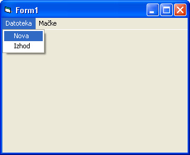
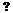
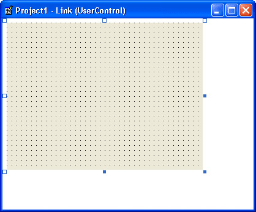
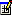
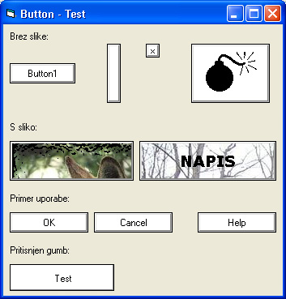
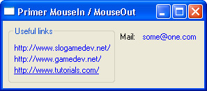
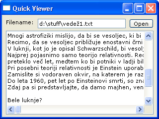
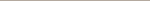

(7) Kako vstavimo v menije preproste ikonice?
Hja, težko. Za ikone, kot jih vidimo v profesionalnih programih (tudi v samemu razvojnemu okolju VB6) bi moral napisati trideset stransko modulo z n-krat uporabljenimi API deklaracijami, pa bi še izgledalo čudno. V VB je to opravilo presneto težko. Ena možnost je, da odjadrate na [url]www.vbaccellerator.com[/url] in si omenjen primer ogledate na lastne oči, druga pa, da se zadovoljite z navadnimi 13x13 črnobelimi bitmapi. Koda za le-te je silno preprosta - napravite torej nov projekt, izdelajte novo formo in jo olepšajte z dvema menijema, denimo:

Zdaj na formo nalepite kontrolo Image z imenom imgIkona ji priredite sliko,

Visible na False, v Formo pa kopirajte naslednjo kodo:
Private Declare Function GetMenu Lib "user32" (ByVal hWnd As Long) As Long
Private Declare Function GetSubMenu Lib "user32" (ByVal hMenu As Long, ByVal nPos As Long) As Long
Private Declare Function GetMenuItemID Lib "user32" (ByVal hMenu As Long, ByVal nPos As Long) As Long
Private Declare Function SetMenuItemBitmaps Lib "user32" (ByVal hMenu As Long, ByVal nPosition As Long, ByVal wFlags As Long, ByVal hBitmapUnchecked As Long, ByVal hBitmapChecked As Long) As Long
Private Sub AddMenuBitmap(Menu As Long, SubMenuIndex As Long, Unchecked As Long, Optional Checked As Long)
Dim hMenu, hSubMenu, menuID, x
hMenu = GetMenu(hWnd)
hSubMenu = GetSubMenu(hMenu, Menu) '1 for "Other" menu etcetera
menuID = GetMenuItemID(hSubMenu, SubMenuIndex)
If Checked = 0 Then
x = SetMenuItemBitmaps(hMenu, menuID, &H4, Unchecked, 0&)
Else
x = SetMenuItemBitmaps(hMenu, menuID, &H4, Unchecked, Checked)
End If
End Sub
Kako zdaj dodajamo ikone? Najprej si zapomnite, da morajo biti vse narejene v velikosti 13x13 in morajo biti črnobele (ali zelo malo obarvane), drugače pride do popačenja. Za transparentno barvo API funkcija vzame točko 1,1 na sliki, zato se potrudite, da le-ta ne bo obarvana. Ikone dodajamo po principu oštevilčenih menijev, se pravi da ima vsak meni določeno zaporedno številko. Glavni meni 0 bi tu bil meni 'Datoteka', glavni meni 1 pa 'Mačke'. Če bi imeli zraven še meni 'Pomoč', bi ta dobil zaporedno številko 2. Enako je v podmenijih. Meni 0 bi bil v glavnem meniju Datoteka 'Nova', meni 1 pa 'Izhod'. Tako dobimo logične koordinate, denimo 0,1 ali 1,2. Primer uporabe funkcije:
Private Sub Form_Load()
AddMenuBitmap 1, 1, imgIkona.Picture
End Sub
Če funkciji podate še eno sliko na koncu (npr. AddMenuBitmap 3,2, imgIkona.Picture, imgIkona2.Picture), se bo druga ikona prikazala takrat, ko bo vrednost menija Checked True. Torej lahko zamenjate navadne kljukice s čim bolj elegantnim. In rezultat:

(8) Kako zajamemo sliko (screenshot)?
Uporabimo dve API funkciji, s katerimi zajamemo trenutno sliko zaslona. Tako tudi obidemo spreminjanje podatkov v clipboardu (odlagališču). Poglejmo si preprost primer; ustvarimo nov projekt, na formi naredimo PicutreBox z imenom Picture1, in gumb z imenom Command1. V formo kopiramo sledečo kodo:
Option Explicit
Private Declare Function GetDC Lib "user32" (ByVal hwnd As Long) As Long
Private Declare Function StretchBlt Lib "gdi32" (ByVal hdc As Long, ByVal x As Long, ByVal y As Long, ByVal nWidth As Long, ByVal nHeight As Long, ByVal hSrcDC As Long, ByVal xSrc As Long, ByVal ySrc As Long, ByVal nSrcWidth As Long, ByVal nSrcHeight As Long, ByVal dwRop As Long) As Long
Private Sub Command1_Click()
Dim wScreen As Long
Dim hScreen As Long
Dim w As Long
Dim h As Long
Picture1.cls
wScreen = Screen.Width \ Screen.TwipsPerPixelX
hScreen = Screen.Height \ Screen.TwipsPerPixelY
Picture1.ScaleMode = vbPixels
w = Picture1.ScaleWidth
h = Picture1.ScaleHeight
hdcScreen = GetDC(0)
r = StretchBlt(Picture1.hdc, 0, 0, w, h, hdcScreen, 0, 0, wScreen, hScreen, vbSrcCopy)
End Sub
Vedno, ko kliknemo na gumb, zajamemo trenutno sliko (celega) namizja. Če na začetku funkcije izbrišemo "Picture1.cls", lahko naredimo neskončno sliko, npr.:

(9) Kako igram zvoke in zvočne datoteke?
Odkrito rečeno, načinov je toliko, da se ti od njih zvrti. Naj pokažem le, kako se igra navadne (WAV) in kako glasbene (MP3) datoteke. Pri wav-ih uorabimo preprosto deklaracijo in dve funkciji, s katerima zvok začnemo ali nehamo igrati. Koda je sledeča (zapišite v lastno modulo):
Option Explicit
'API
#If Win32 Then
Declare Function sndPlaySound Lib "winmm.dll" Alias "sndPlaySoundA" (ByVal lpszSoundName As Any, ByVal uFlags As Long) As Long
#Else
Declare Function sndPlaySound Lib "MMSYSTEM.DLL" (ByVal lpszSoundName As Any, ByVal wFlags As Integer) As Integer
#End If
Public Const SND_LOOP = &H8 'loop the sound until next sndPlaySound
Public Const SND_ASYNC = &H1 'play asynchronously
Enum PlayModes
LoopSound = 0
Asynchronously = 1
End Enum
Public Sub PlayWAV(SoundFile As String, Optional PlayMode As PlayModes = 0)
Dim Ret As Variant
Select Case PlayMode
Case 0
Ret = sndPlaySound(SoundFile, SND_LOOP Or SND_ASYNC)
Case 1
Ret = sndPlaySound(SoundFile, SND_ASYNC)
End Select
DoEvents 'for &H1
End Sub
Public Sub EndWAV()
Dim Ret As Variant
Ret = sndPlaySound(0&, 0&)
End Sub
MP3-je pa igramo takole:
Public Declare Function mciSendString Lib "winmm.dll" Alias "mciSendStringA" ()
Public Sub PlayMP3(FileName As String)
Dim Ret As Long
Ret = mciSendString("OPEN " & FileName & " Alias Sonido", 0, 0, 0)
Ret = mciSendString("Play sonido", 0, 0, 0)
End Sub
Zavedati se morate, da so to najosnovnejši postopki, saj za sodobno igro mešamo MP3-je ali MIDi-je z WAVi. To najlaže naredimo z dvema Windows Media Player Kontrolama (Ctrl+T), ki jim Visible nastavimo na False, nato pa enega uporabimo za MP3, drugega za WAV.
(10) Kako naredim ActiveX kontrolo?
Ker bi iz tega vprašanja lahko naredil celo knjigo, bom opisal samo najosnovnejše reči, na katere morate paziti pri izdelavi lastne (ActiveX) kontrole. Če s tem še nimate izkušenj, ste v meniju Project gotovo že kdaj kliknili na možnost 'Add user control', nato pa ste se čudili, kaj za vraga naj bi s tem počeli. No, tu bom poskusil reč obrazložiti. Kontrola izgleda nekako takole:

Deluje kot navadna forma, le s to razliko, da pač nima naslovne vrstice. Da se s stvarjo spoznate, na kontrolo nalimajte nekaj standardnih kontrol (denimo gumb ali label), nato okno zaprite in na navadno formo prilimajte to kontrolo (ikona  v vrstici s kontrolami). Zdaj ste najbrž že pogruntali, da so kontrole objekti, ki jih lahko oblikujemo sami - in verjemite mi, da dokler jih ne spoznate, je delo z VB preklemano težko. Ko so se prvič pojavile v VB4, so postale prava revolucija, in tako je tudi prav. Naredimo zdaj preprost primer z gumbom.
Option Explicit
'Property Variables
Private P_Caption As String
Private P_BackColor As Long
Private P_ForeColor As Long
Private P_Picture As StdPicture
'Vars
Private Pushed As Boolean
'Events
Event Click()
Event MouseDown(Button As Integer, Shift As Integer, X As Single, Y As Single)
Event MouseMove(Button As Integer, Shift As Integer, X As Single, Y As Single)
Event MouseUp(Button As Integer, Shift As Integer, X As Single, Y As Single)
Public Property Get Caption() As String
Caption = P_Caption
End Property
Public Property Let Caption(ByVal New_Caption As String)
P_Caption = New_Caption
UserControl_Resize
End Property
Public Property Get Font() As StdFont
Set Font = UserControl.Font
End Property
Public Property Set Font(ByVal New_Font As StdFont)
Set UserControl.Font = New_Font
UserControl_Resize
End Property
Public Property Get ForeColor() As OLE_COLOR
ForeColor = P_ForeColor
End Property
Public Property Let ForeColor(ByVal New_ForeColor As OLE_COLOR)
P_ForeColor = New_ForeColor
UserControl_Resize
End Property
Public Property Get BackColor() As OLE_COLOR
BackColor = P_BackColor
End Property
Public Property Let BackColor(ByVal New_BackColor As OLE_COLOR)
P_BackColor = New_BackColor
UserControl_Resize
End Property
Public Property Get Picture() As StdPicture
Set Picture = P_Picture
End Property
Public Property Set Picture(ByVal New_Picture As StdPicture)
Set P_Picture = New_Picture
UserControl_Resize
End Property
Private Sub UserControl_Click()
RaiseEvent Click
End Sub
Private Sub UserControl_DblClick()
If Pushed = False Then
Pushed = True
ElseIf Pushed = True Then
Pushed = False
End If
UserControl_Resize
End Sub
Private Sub UserControl_Initialize()
'(to bo v slovenščini:) - zapomnite si, da mora biti autoredraw v vsakem primeru vklopljen, drugače pride do utripanja
AutoRedraw = True
Pushed = False
End Sub
Private Sub UserControl_InitProperties()
P_Caption = Extender.Name
P_ForeColor = vbBlack
P_BackColor = vbWhite
End Sub
Private Sub UserControl_MouseDown(Button As Integer, Shift As Integer, X As Single, Y As Single)
Pushed = True
UserControl_Resize
RaiseEvent MouseDown(Button, sift, X, Y)
End Sub
Private Sub UserControl_MouseMove(Button As Integer, Shift As Integer, X As Single, Y As Single)
RaiseEvent MouseMove(Button, Shift, X, Y)
End Sub
Private Sub UserControl_MouseUp(Button As Integer, Shift As Integer, X As Single, Y As Single)
Pushed = False
UserControl_Resize
RaiseEvent MouseUp(Button, Shift, X, Y)
End Sub
Private Sub UserControl_Resize()
'Draw control
On Error Resume Next 'error handler
Cls
UserControl.BackColor = P_BackColor
UserControl.ForeColor = P_ForeColor
If Pushed And Ambient.UserMode Then
'picture
PaintPicture P_Picture, 45, 45
'lines representing a button
Line (0, 0)-(ScaleWidth - 15, ScaleHeight - 15), vbBlack, B
Line (ScaleWidth - 30, 15)-(ScaleWidth - 30, ScaleHeight - 15), &H808080
Line (15, ScaleHeight - 30)-(ScaleWidth - 30, ScaleHeight - 30), &H808080
'caption
CurrentX = ((ScaleWidth - TextWidth(P_Caption)) / 2) + 15
CurrentY = ((ScaleHeight - TextHeight(P_Caption)) / 2) + 15
Print P_Caption
Else
'picture
PaintPicture P_Picture, 30, 30
'lines representing a button
Line (0, 0)-(ScaleWidth - 15, ScaleHeight - 15), vbBlack, B
Line (ScaleWidth - 30, 15)-(ScaleWidth - 30, ScaleHeight - 15), &HC0C0C0
Line (15, ScaleHeight - 30)-(ScaleWidth - 30, ScaleHeight - 30), &HC0C0C0
Line (30, 30)-(ScaleWidth - 45, ScaleHeight - 45), &HE0E0E0, B
Line (ScaleWidth - 45, 30)-(ScaleWidth - 45, ScaleHeight - 30), &H808080
Line (30, ScaleHeight - 45)-(ScaleWidth - 45, ScaleHeight - 45), &H808080
'caption
CurrentX = (ScaleWidth - TextWidth(P_Caption)) / 2
CurrentY = (ScaleHeight - TextHeight(P_Caption)) / 2
Print P_Caption
End If
End Sub
Private Sub UserControl_ReadProperties(PropBag As PropertyBag)
'We read properties here (from saved property bag)
P_Caption = PropBag.ReadProperty("Caption", "")
Set UserControl.Font = PropBag.ReadProperty("Font", Ambient.Font)
P_ForeColor = PropBag.ReadProperty("ForeColor", vbBlack)
P_BackColor = PropBag.ReadProperty("BackColor", vbWhite)
Set P_Picture = PropBag.ReadProperty("Picture", LoadPicture(""))
UserControl_Resize
End Sub
Private Sub UserControl_WriteProperties(PropBag As PropertyBag)
'We write properties here (otherwise they wouldn't be saved)
Call PropBag.WriteProperty("Caption", P_Caption, "")
Call PropBag.WriteProperty("Font", UserControl.Font, Ambient.Font)
Call PropBag.WriteProperty("ForeColor", P_ForeColor, vbBlack)
Call PropBag.WriteProperty("BackColor", P_BackColor, vbWhite)
Call PropBag.WriteProperty("Picture", P_Picture, LoadPicture(""))
End Sub
To je to. Stvar v praksi izgleda nekako takole:

Detajle razbrite iz kode same.
(11) Kako naj naredim dogodek, ki se sproži, ko miška zapusti objekt?
Se pravi slavni MouseIn ali MouseOut, ki je v zadnjih časih tako priljubljen - ko gre miška čez kontrolo, ta npr. spremeni barvo, ko pa gre ven, jo spremeni nazaj. Mnogi začetniki to poskušajo reševati tako, da za MouseIn vzamejo dogodek MouseMove (ki je prisoten v vsaki kontroli), za MouseOut pa kar dogodek MouseMove starša - se pravi forme, ki je okrog te kontrole. Napaka. V sekundi naštejem deset hroščev, ki peljejo iz tega. Obstaja mnogo elegantnejši način, in za primer bomo vzeli preprost napis, ki se bo podčrtal, ko bomo čezenj zapeljali kurzor - se pravi klasičen link. Naredite nov projekt, nato dodajte User Control, vanj pa zapišite:
Option Explicit
'SetCapture & ReleaseCapture are to track the mouse
Private Declare Function SetCapture Lib "user32" (ByVal hwnd As Long) As Long
Private Declare Function ReleaseCapture Lib "user32" () As Long
'Vars
Private MouseIn As Boolean
'Properties
Private P_Caption As String
'Events
Event Click()
Public Property Get Caption() As String
Caption = P_Caption
End Property
Public Property Let Caption(ByVal New_Caption As String)
P_Caption = New_Caption
UserControl_Resize
End Property
Private Sub UserControl_Click()
RaiseEvent Click
End Sub
Private Sub UserControl_Initialize()
AutoRedraw = True
End Sub
Private Sub UserControl_InitProperties()
P_Caption = Extender.Name
End Sub
Private Sub UserControl_MouseMove(Button As Integer, Shift As Integer, X As Single, Y As Single)
'track the mouse
Dim Temp As Boolean
'always call ReleaseCapture or it will cause problems for other controls
Call ReleaseCapture
'is the mouse off of the button
If (X < 0) Or (Y < 0) Or (X > UserControl.Width) Or (Y > UserControl.Height) Then
Temp = False
Else
'the mouse is still over the button, so be sure to call SetCapture again
Temp = True
Call SetCapture(UserControl.hwnd)
End If
'set MouseIn
MouseIn = Temp
'paint
UserControl_Resize
End Sub
Private Sub UserControl_ReadProperties(PropBag As PropertyBag)
P_Caption = PropBag.ReadProperty("Caption", "")
End Sub
Private Sub UserControl_Resize()
'paint the control
Cls
If MouseIn And Ambient.UserMode Then
Font.Underline = True
Else
Font.Underline = False
End If
ForeColor = vbBlue
Print P_Caption
Width = TextWidth(P_Caption)
Height = TextHeight(P_Caption)
End Sub
Private Sub UserControl_WriteProperties(PropBag As PropertyBag)
Call PropBag.WriteProperty("Caption", P_Caption, "")
End Sub
V kombinaciji s ShellEx (opisan zgoraj) je kontrola kar uporabna, se vam ne zdi? Kontroli nastavite še hand cursor (najdete ga nekje v mapi Windows\Cursors), in voila - rezultat je sledeč:

(12) Kako izvem X in Y položaje miške?
S sledečima funkcijama:
Public Declare Function GetCursorPos Lib "user32" (lpPoint As POINTAPI) As Long
Type POINTAPI
X As Long
Y As Long
End Type
Public Function GetX() As Single
Dim GetCurPos As POINTAPI
Call GetCursorPos(GetCurPos)
GetX = GetCurPos.X * 15
End Function
Public Function GetY() As Single
Dim GetCurPos As POINTAPI
Call GetCursorPos(GetCurPos)
GetY = GetCurPos.Y * 15
End Function
(13) Kako "hitreje" preberem tekstovno datoteko?
Ponavadi grejo začetniki delati Notepade, in imajo velike težave s prebiranjem datotek, saj naredijo loop, ki gre čez vse vrstice datoteke. No, obstaja dosti manj boleča rešitev. Pokažimo to na preprostem primeru. Imamo Text1, kjer vripkamo ime datoteke, Text2, kjer je prikazana vsebina datoteke, in Command1, ki branje datoteke sproži:
Private Sub Command1_Click()
Open Text1 For Input As #1
Text2.Text = Input(LOF(1), 1)
Close #1
End Sub
Rezultat:
  O avtorju
Danijel "Trayrd" Durakovič
Danijel je dijak 1. letnik Srednje šole za elektrotehniko in računalništvo (Vegove) in programer pri skupini IceAxis. V VB-ju je zaradi štiriletnega učenja že kar vešč, njegovi načrti pa so C/C++ in OpenGL. Trenutno dela na projektu Zion (katerega demo lahko dobite na http://users.volja.net/horsii/ZP.zip), zadnje čase pa se muči predvsem z grafiko in Photoshopom.
|